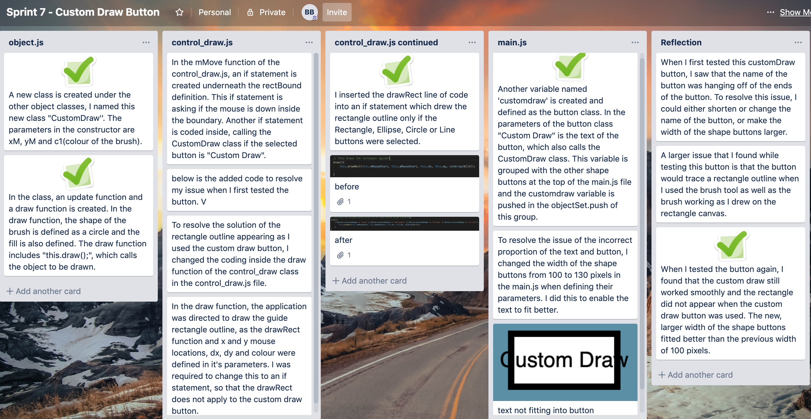

custom draw button this is the seventh version of the application
Sprint 7
My aim for this sprint is to create a button which allows the user to draw their own designs, as if they are using a paintbrush or pencil
My trello page:

My video testing:
This video shows the error of the rectangle outline appearing as I used the custom draw on the rectangle canvas.
You can also see how it is difficult to read the text on the button.
This video shows the testing when the rectangle outline is removed and the width of the shape buttons are 30 pixels wider.